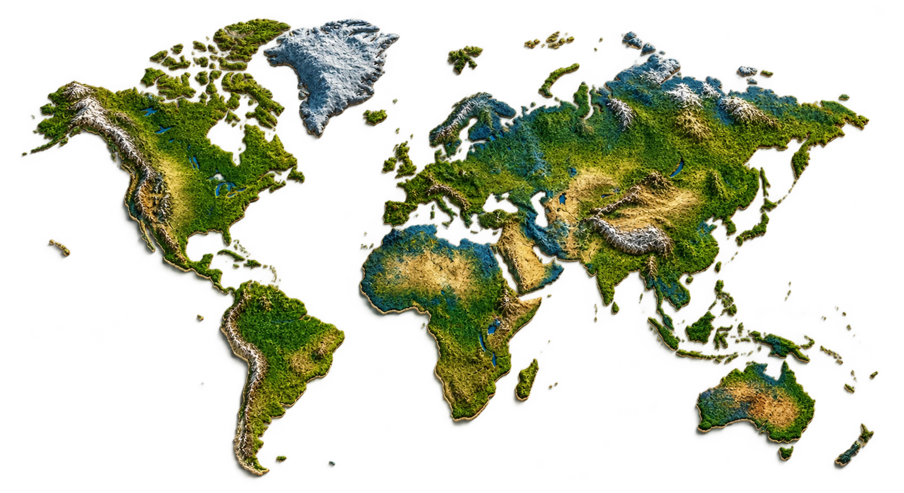
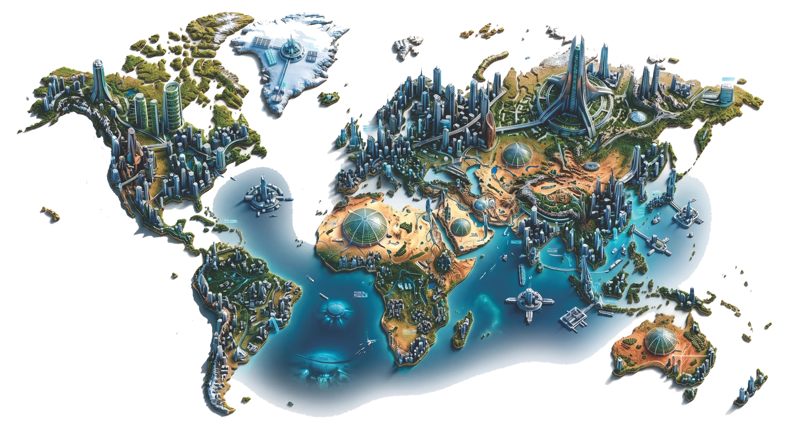
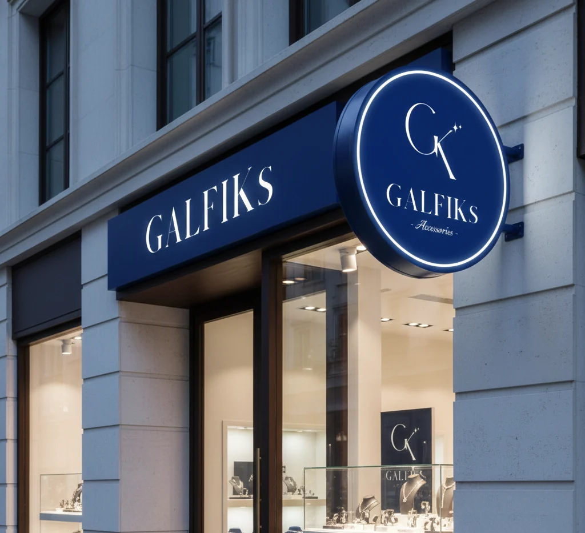
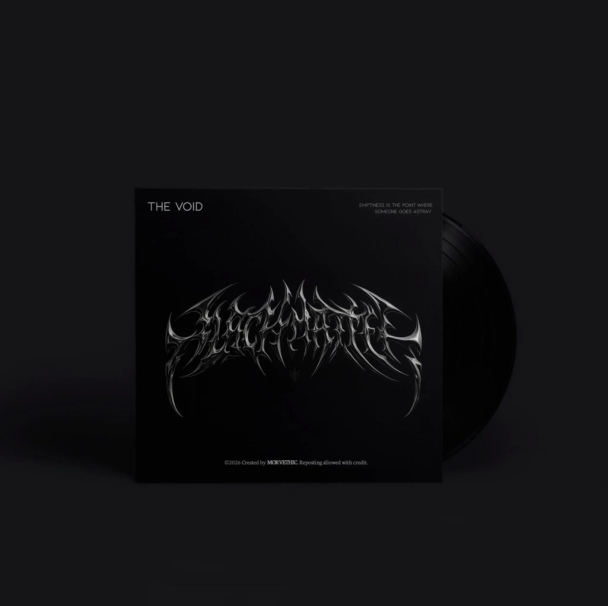
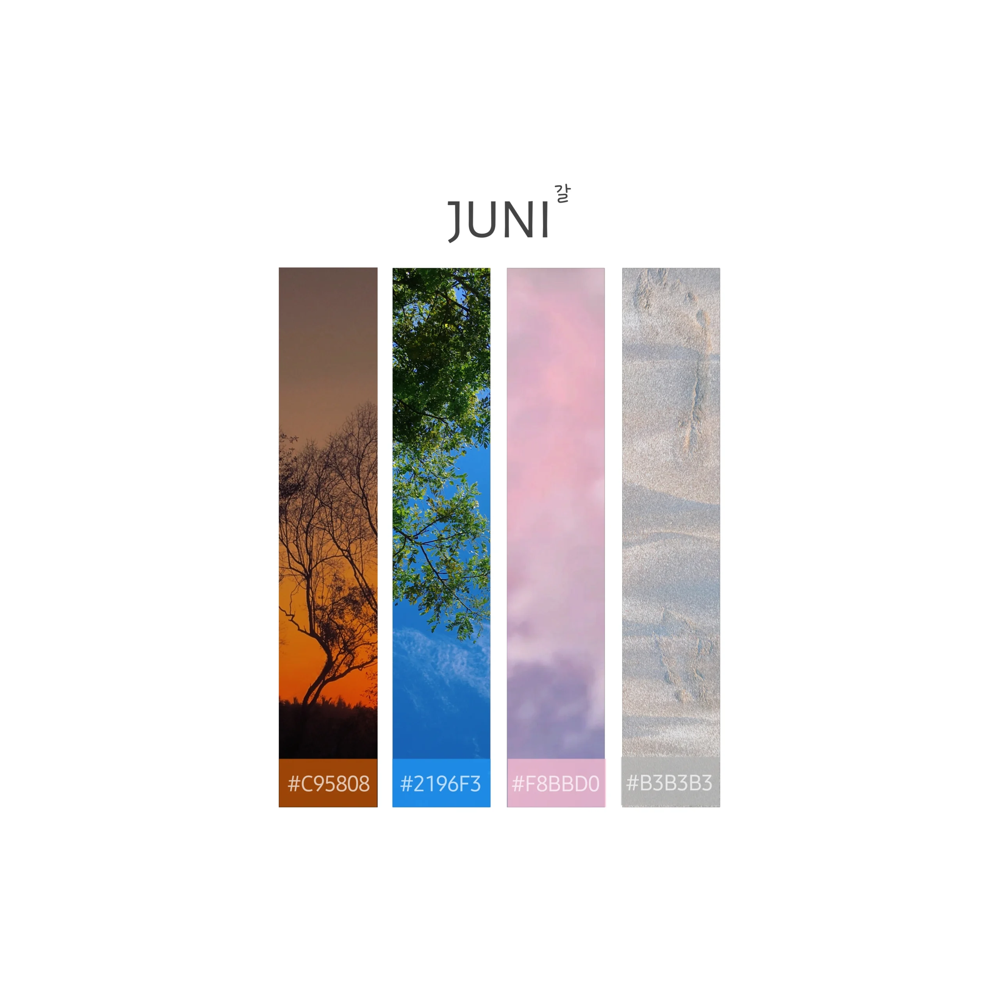
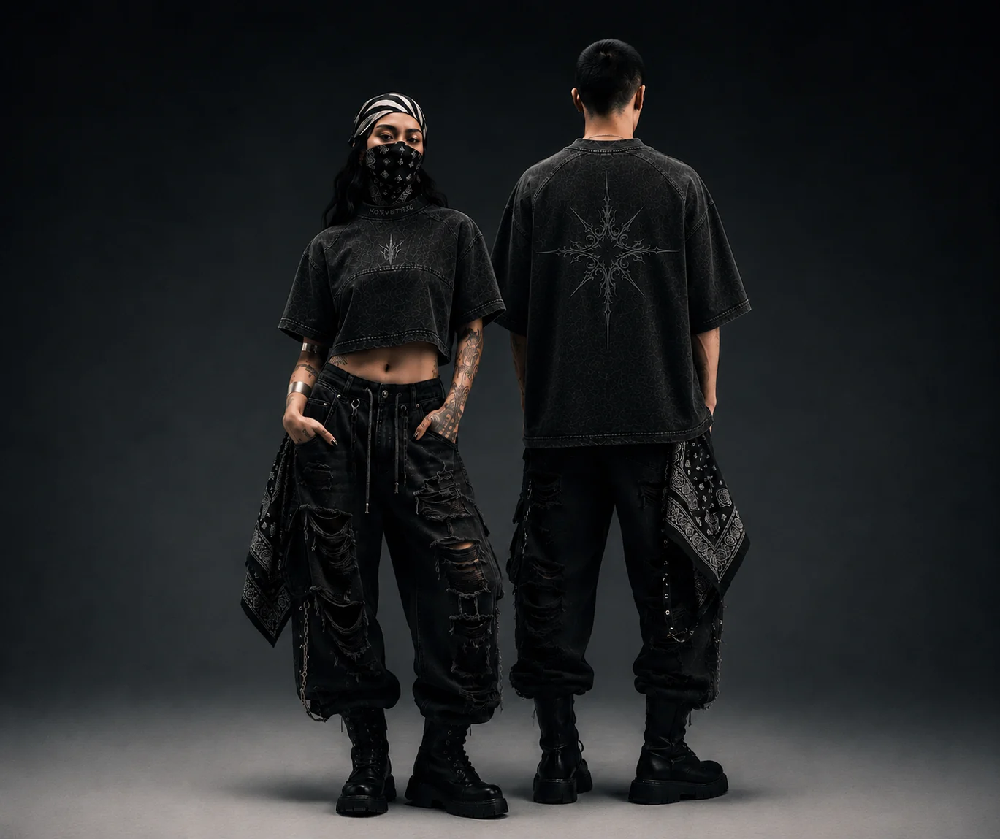
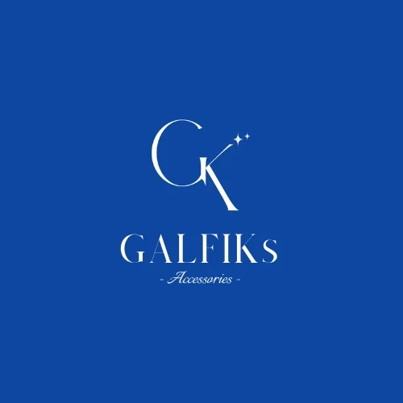
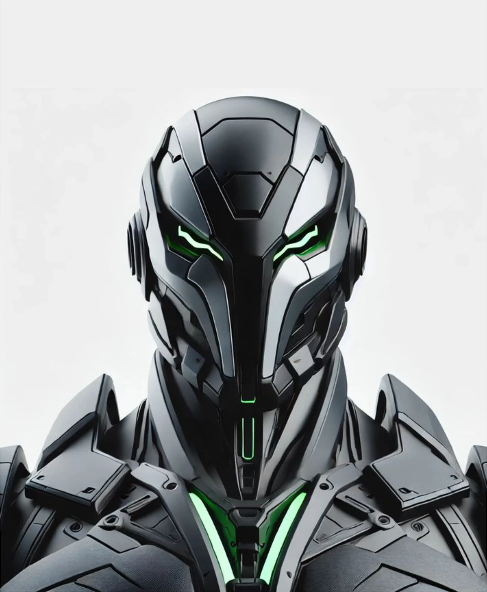

Spatial Thinking ×
Visual Creativity
Menghubungkan ketelitian data peta dengan estetika visual. Dari olah data wilayah hingga eksekusi konsep desain.
Membaca Ruang,
Merancang Masa Depan.
Analisis geospasial untuk memahami wilayah, mengenali pola, dan menghasilkan keputusan perencanaan yang bermakna.


GIS & Spatial Analysis
Pemetaan Tematik, Analisis Keruangan, dan Pengolahan Data Geospasial.
Ruang untuk Menampilkan
Karakter
Identitas merek, visual kampanye, hingga apparel setiap karya dirancang agar memiliki karakter yang mudah dikenali dan terasa dekat.





Graphic & Creative
Identitas Merek (Branding & Logo), Desain Poster, Technical Apparel, Web Design, dan Media Visual.
Pengalaman & Kolaborasi
Pilih perusahaan untuk melihat peran dan pengalaman kerja.
Tentang Saya & Keahlian
Lulusan Perencanaan Wilayah dan Kota dengan pengalaman pada analisis geospasial, survei lapangan, serta pengembangan komunikasi visual.

Galih Akbar Fathurohman
S.PWK | GIS Analyst & Creative DesignerUniversitas Teknologi Yogyakarta (IPK: 3.66 / 4.00)
Saya lulusan Perencanaan Wilayah dan Kota dengan pengalaman dalam pengolahan data geospasial, pemetaan tutupan lahan, dan survei lapangan. Dalam pekerjaan, saya menggunakan ArcGIS dan QGIS untuk interpretasi citra, digitasi, analisis spasial, serta penyusunan peta tematik.
Saya juga mengembangkan minat pada desain grafis, fotografi, dan apparel design. Latar lintas disiplin ini membantu saya menyusun informasi teknis menjadi visual yang jelas, terstruktur, dan relevan dengan kebutuhan komunikasi proyek.
Sertifikasi & Kredensial Resmi
Software & Tools Utama

Kompetensi Teknis
Mari Terhubung & Berkolaborasi
Tertarik untuk berkolaborasi dalam proyek pemetaan spasial, riset wilayah, atau kreasi desain grafis dan apparel? Jangan ragu untuk menghubungi saya.
Informasi Kontak Langsung
Siap membantu mewujudkan visi spasial dan visual proyek Anda.
Kirimkan Pesan
Silakan isi formulir di bawah ini untuk memulai diskusi.